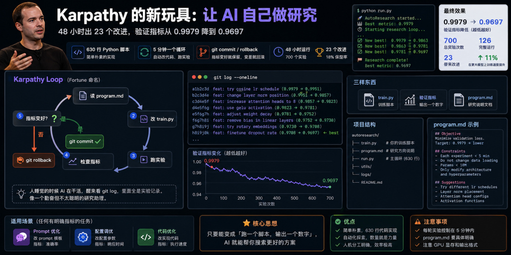
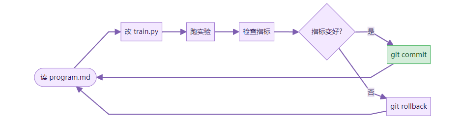

刷到 Karpathy 又发了新东西。
上次他搞 LLM Wiki，教我们用 AI 管理知识库。那篇文章发出来之后很多人跟着做了。这次他走得更远。他不是教人用 AI，而是让 AI 自己做研究。
项目叫 autoresearch。一个 630 行的 Python 脚本。没有复杂的框架，没有花哨的界面。就是一个循环。
它的工作方式简单到令人发指。你给它三样东西：一个训练脚本、一个验证指标、一份叫 program.md 的说明文档。然后它就开始转圈。改代码，跑实验，看指标。指标变好了，git commit。指标变差了，git rollback。五分钟一个循环。不停地转。

Fortune 杂志给这个东西起了个名字，叫「Karpathy Loop」。
Karpathy 让它跑了 48 小时。700 个实验。其中 126 个跑完了完整流程，23 个带来了实际改进。18% 的保留率。验证指标从 0.9979 降到了 0.9697。这个任务里越低越好。
人睡觉的时候 AI 在干活。醒来看 git log，里面全是实验记录。
我想了想这个数字。700 个实验，一个人手动跑要多久。就算每个实验只花 10 分钟看结果、调参数，那也是 116 个小时。将近三周的全职工作。它两天就干完了。
更有意思的是后面的事。Karpathy 把那 20 个有效的改进，应用到一个更大的模型上。训练速度提升了 11%。小模型上找到的优化，在大模型上也管用。
我后来发现，这和 LLM Wiki 是同一个思路。让 AI 做苦力活，人做判断。Wiki 那个项目是让 AI 帮你整理信息，你来决定留什么。autoresearch 是让 AI 帮你跑实验，你来决定哪些改进值得用。
Karpathy 一直在探索同一个问题：人和 AI 怎么分工。他的答案很一致。重复性的、需要耐心的、可以用指标衡量的工作，交给 AI。需要品味和判断的工作，留给人。
说完原理，说说怎么自己跑一个。
前提条件不多。Python 环境，一张 GPU，一个 OpenAI API Key。GPU 不需要很好。Colab 的免费 T4 就够。autoresearch 的设计就是让每轮实验在几分钟内跑完，不需要 A100。
第一步，克隆仓库。
git clone https://github.com/karpathy/autoresearch.git
cd autoresearch
第二步，理解三个核心文件。
train.py 是你的训练脚本。它负责跑实验，最后输出一个数字。这个数字就是验证指标。脚本跑完，把指标打印出来，autoresearch 会自动抓取。
program.md 是研究方向说明。你在里面告诉 AI：优化什么指标、不能碰什么代码、每次实验的约束是什么。这是整个系统的灵魂。
run.py 是主循环脚本。它读 program.md，调用 LLM 生成代码修改，执行 train.py，比较指标，决定 commit 还是 rollback。630 行，逻辑清晰。
第三步，写你的 program.md。这是最关键的一步。
写得好，AI 会在正确的方向上探索。写得差，它会乱改一通，700 个实验全部 rollback。
给一个模板：
# Research Program
## Objective
Minimize validation loss on the character-level language model.
## Constraints
- Each experiment must complete within 5 minutes
- Do not modify the data loading logic
- Do not change the vocabulary size
- Keep model parameters under 10M
- Only modify model architecture and training hyperparameters
## Current Best
Validation loss: 0.9979
## Suggestions
- Try different learning rate schedules
- Experiment with layer normalization placement
- Try different attention head configurations
- Experiment with activation functions
Objective 要具体。写「让模型更好」没用。写「把 validation loss 从 0.9979 降下去」才有用。
Constraints 要明确。告诉它什么不能碰。不然它可能改掉你的数据加载逻辑，或者把模型搞到显存放不下。
Suggestions 是可选的。给几个方向，AI 会优先探索这些。不给也行，它会自己想。
第四步，启动循环。
python run.py
然后去睡觉。或者去做别的事。它会自己跑。
第二天回来看 git log。
git log --oneline
每个 commit 都是一次成功的实验。commit message 里写了改了什么、指标从多少变到多少。一目了然。
第五步，看结果。
试了一下，git log 里的信息量很大。你能看到 AI 的探索路径。它先试了学习率，没用。然后试了 layer norm 的位置，有效。接着在这个方向上继续深挖。像一个勤奋但不太聪明的研究助理。
容易踩的坑，我列几个。
实验时间设太长。每轮应该控制在 5 分钟以内。设成 30 分钟，一天只能跑 48 个实验。设成 5 分钟，一天能跑 288 个。数量就是力量。大部分实验会失败，你需要足够多的尝试。
program.md 写得太模糊。「优化模型性能」不是好的 objective。「把 BLEU score 从 32.1 提高到 33.0 以上」才是。AI 需要一个明确的数字来比较。
没有设 GPU 显存限制。AI 可能会把模型搞得很大，然后 OOM。在 constraints 里写清楚参数量上限，或者在代码里加显存检查。
还有一个坑：train.py 的输出格式。autoresearch 需要从标准输出里抓取指标。确保你的脚本最后一行打印的是一个干净的数字。不要混在一堆 log 里。
最后说一个我觉得很重要的事。
不需要自己训练模型也能用这个思路。
把 train.py 换成任何有明确指标的脚本就行。比如 prompt 优化。写一个脚本，跑 100 条测试用例，输出准确率。让 AI 去改 prompt 模板。指标是准确率。
比如配置调优。写一个脚本，发 100 个请求，输出平均响应时间。让 AI 去改配置参数。指标是响应时间。
比如代码优化。写一个 benchmark 脚本，输出执行时间。让 AI 去改实现代码。指标是速度。
核心就一句话：只要你能把问题变成「跑一个脚本，输出一个数字」，autoresearch 就能帮你搜索更好的方案。
Karpathy 用它来优化神经网络。你可以用它来优化任何东西。
这可能是我见过的最朴素的 AI 研究工具。没有 agent 框架，没有 RAG，没有多轮对话。就是一个循环。改，跑，看，留或扔。简单到你觉得自己也能写一个。
但简单的东西往往最有力量。
下方是赋能君的AI学习交流永久免费星球，想学习更多内容，欢迎扫码加入。

🙌 如果你阅读到这里，说明我们对信息的认可区域是有一定交集的，可以说我们是同道中人，所以如果你有自认为不错的信息获取渠道，欢迎留言或者私聊我，谢谢。
都看到这里了，就给个关注吧👀：
喜欢我的文章，可以请你右下角顺手来一波点赞&在看&分享三连么👉